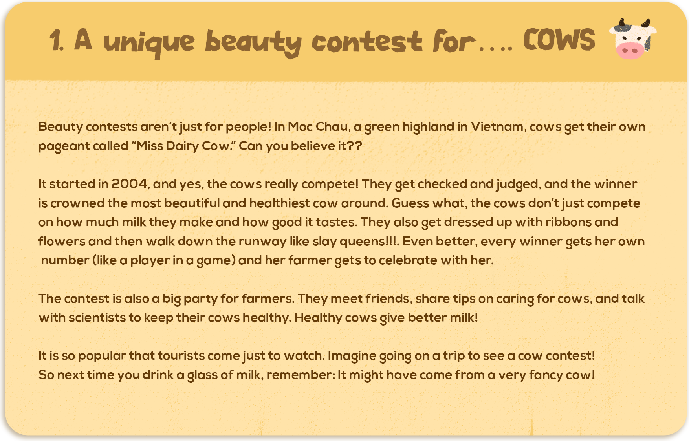

1. A unique beauty contest for .... COWS
Beauty contests aren’t just for people! In Moc Chau, a green highland in Vietnam, cows get their own pageant called “Miss Dairy Cow”. Can you believe it??
It started in 2004, and yes, the cows really compete! They get checked and judged, and the winner is crowned the most beautiful and healthiest cow around. Guess what, the cows don’t just compete on how much milk they make and how good it tastes. They also get dressed up with ribbons and flowers and then walk down the runway like slay queens!!!. Even better, every winner gets her own number (like a player in a game), and her farmer gets to celebrate with her.
The contest is also a big party for farmers. They meet friends, share tips on caring for cows, and talk with scientists to keep their cows healthy. Healthy cows give better milk!
It is so popular that tourists come just to watch. Imagine going on a trip to see a cow contest! So next time you drink a glass of milk, remember: It might have come from a very fancy cow!